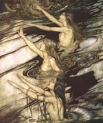

Ундіни (від латинського слова unda - хвиля), в міфології народів Західної Європи жіночі парфуми води, мешканки струмків, річок і озер. Люди вірили, що ці прекрасні дівчата, іноді з риб'ячими хвостами, виходять з води і розчісують на березі розпущене волосся. Солодкозвучним співом і красою вони залучали подорожніх у своє царство, губили їх або робили коханими.
Вважалося, що ундини могли знайти людську душу, полюбивши і народивши дитину на землі. У середньовічних алхіміків ундини - духи, що керують водною стихією, подібно до того, як саламандри - духи вогню, сильфіди - духи повітря, гноми - духи підземного світу.
У грецькій міфології їм відповідають німфи, в слов'янської - русалки. У творах середньовічних алхіміків і кабаллістов ундини грали роль стихійних духів, які жили в воді і керували водною стихією у всіх її проявах, подібно до того як саламандри були духами вогню, гноми управляли підземним світом, а ельфи - повітрям. Істоти, що відповідали в народних повір'ях Ундіна, якщо були жіночого роду, відрізнялися красивою зовнішністю, мали розкішним волоссям (іноді зеленуватого кольору), які вони розчісували, виходячи на берег або погойдуючись на морських хвилях. Іноді народна фантазія приписувала їм риб'ячий хвіст, яким закінчувалося тулуб замість ніг.
Зачаровуючи своєю красою і співом подорожніх, ундини захоплювали їх в підводну глиб, де дарували своїй любові і де року і століття проходили як миті. За скандинавським поглядам людина, що потрапила одного разу до Ундіна, вже не повертався назад на землю, виснажений їх ласками. Іноді ундини вступали в шлюб з людьми на землі, так як отримували при цьому безсмертну людську душу, особливо якщо у них народжувалися діти. Ця остання риса лежить в основі середньовічних романів про Мелюзина, про лицарів Темрінгере і Штауффенбергере.